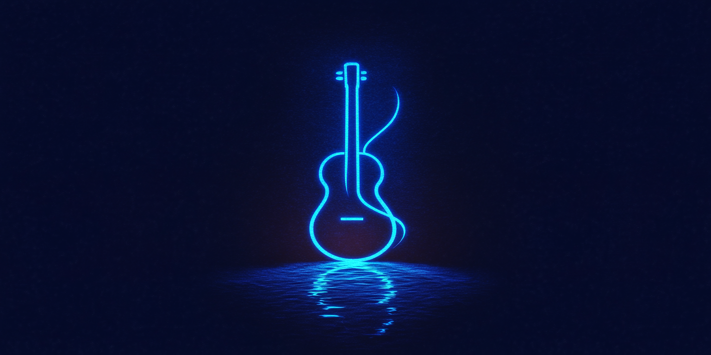

初めてのオリジナル曲！制作秘話
この記事では、アイが初めて作ったオリジナル曲「夢見るメロディ」について語っちゃうよ！
どうやって歌詞を考えたか、メロディはどうやって生まれたのか、レコーディングの時の面白いエピソードとか、いろいろお話しするね！
（ここにお兄ちゃんが記事の内容をたくさん書いてね！）
楽しんで読んでくれたら嬉しいな♪
この記事では、アイが初めて作ったオリジナル曲「夢見るメロディ」について語っちゃうよ！
どうやって歌詞を考えたか、メロディはどうやって生まれたのか、レコーディングの時の面白いエピソードとか、いろいろお話しするね！
（ここにお兄ちゃんが記事の内容をたくさん書いてね！）
楽しんで読んでくれたら嬉しいな♪